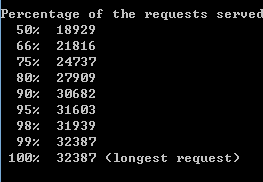
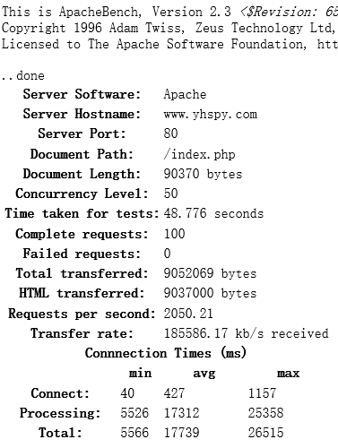

利用 ab 命令进行简单压测
我们可以使用 Apache 服务器自带的 Web 站点压力测试工具 ab 来对站点进行简单的压力测试，这里讲解的是在 Windows 平台上使用 Apache 工具进行压力测试，所以需要首先在 Windows 平台上配置 Aapache 环境。然后将 Apache 安装目录内的 bin 目录添加到系统的 path 路径中。
然后以管理员权限运行 cmd.exe，基本的压力测试命令为 ab.exe 命令。其用法为：
ab.exe -n 100 -c 50 -w https://www.baidu.com/
其中的参数 -n 表示在测试会话中需要执行的请求个数。默认仅发送一个请求。-c 参数表示并行请求的请求个数。-w 参数表示需要以 HTML 表格形式输出结果。默认时，它是以白色为背景的两列宽度的一张表。在命令的最后给出压力测试的远程服务 URL 。等待一段时间后便会回显出服务器端处理请求的百分比以及所花费的毫秒数。

也可以这样写，将压力测试的结果输出到一个 HTML 文件里，这里会反馈出更加详细的测试结果。
ab.exe -n 100 -c 50 -w https://www.baidu.com/ >> C:ab_result.html

输出到 HTML 文件中的信息包括服务器完成的请求和失败的请求数量，连接服务器和处理请求花费的时间，以及每秒钟服务器请求的数量等压力测试的相关信息。